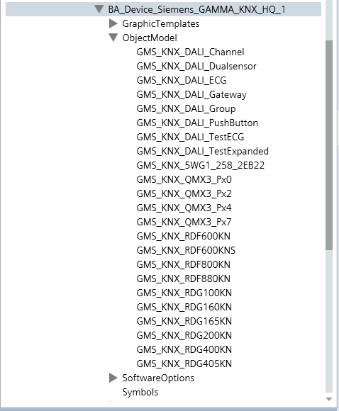

GAMMA KNX Integration
The Siemens GAMMA KNX extension allows Desigo CC to integrate the GAMMA building control and DALI building lighting systems through KNX connectivity.
Library
The Siemens GAMMA KNX extension installs the Desigo CC library BA_Device_Siemens_GAMMA_KNX_HQ_1, which is available at Project > System Settings > Libraries > L1-Headquarter > BA > Device.

For more details, see GAMMA KNX Graphic Templates and GAMMA KNX Symbols.
This library also provides a set of text groups to cover the different status information and the need of localizable texts for this integration.
Dependencies
The Siemens GAMMA KNX extension is configured to depend on the KNX extension (see KNX), which will be automatically added, if it is not already installed in the system, when the Siemens GAMMA KNX installation feature is selected.